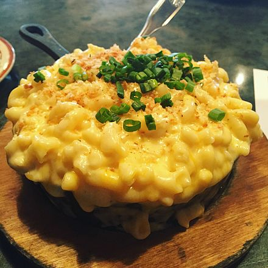

Macaroni and cheese (also called mac and cheese
in Canada and the United States and macaroni cheese
in the United Kingdom) is a dish of cooked
macaroni pasta and a cheese sauce, most commonly
cheddar cheese.
source - Wikipedia
For Westerners(American, European) We all know what does look like. But for others, you will know and recognize what is mac&cheese after reading this.
Mac & Cheese consists of macaroni pasta that is boiled for several minutes. It also contains cheddar cheese(That is most commonly used in USA.)
The picture is shown below:
Before we proceed. We need to prepare some ingredients for Mac n Cheese. Following ingredients we needed: